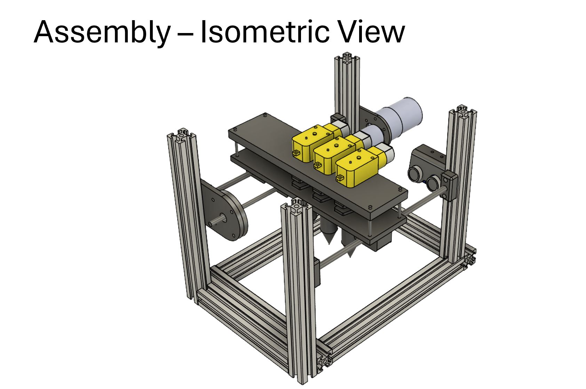
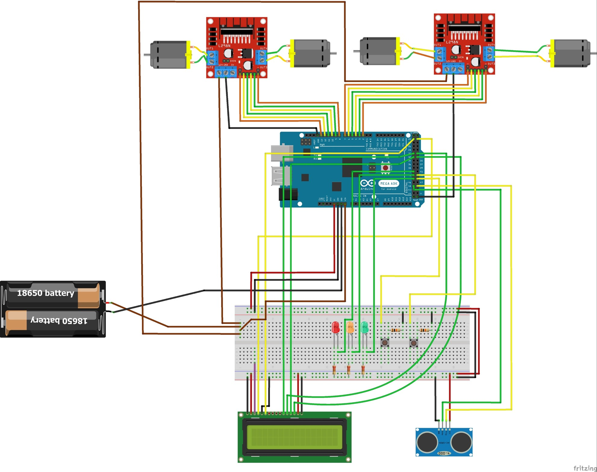
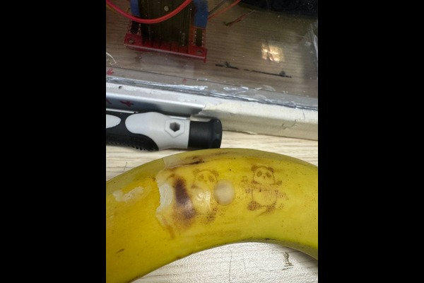

Overview
- Developed as part of the SEP2 module, focusing on sustainable food packaging.
- It features an inkjet-based 2D food printer that prints food labels with food grade ink and a machine that coats the food with wax to ensure the labels remain intact.
- The food printer can be any standard food printer, while the machine's physical structure utilizes T-slot profiles, PLA filament (a thermoplastic used in 3D printing), acrylic, and stainless steel rods and metal components.
- The machine is controlled by an Arduino Mega.
- Code is developed in C++.
- Motor and TT motors are driven by motor drivers, which communicate with the Arduino Mega.
- Ultrasonic sensors are used to prevent collisions with any part of the machine during operation.


My Contributions
- Assisted in identifying food industry challenges and proposed alternative solutions for food labeling.
- Conducted online search on various types of edible coatings and performed testing to evaluate their effectiveness.
- Search for suitable heating elements and assisted in physical prototype creation
- Troubleshoot and solve design issues
Results
- Encountered challenges with coating consistency as coatings only partially covered the intended surface.
- Successfully demonstrated a proof of concept, showing that the wax coating effectively protects the food labels from being wiped away.

Future works
- Consider using a different material to prevent leakage at the syringe tip
- Increase the edible wax storage capacity to ensure it will be able to use multiple times on each fill.
- Include a temperature sensor to regulate heating and avoid burning the edible wax